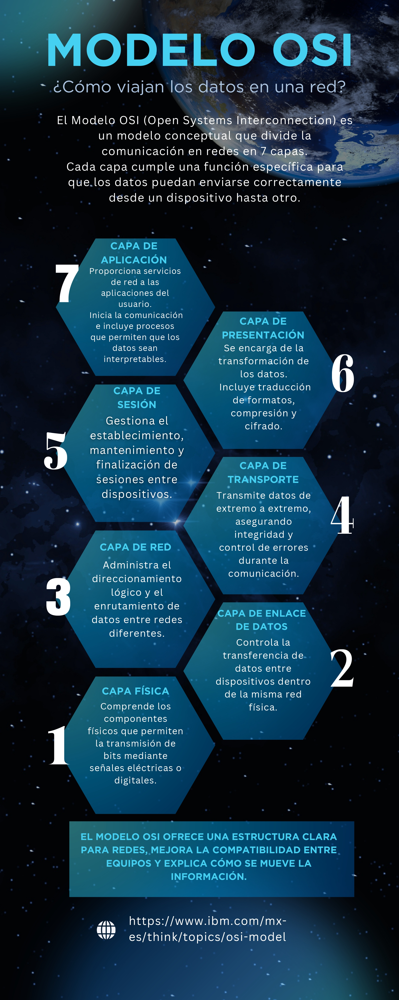
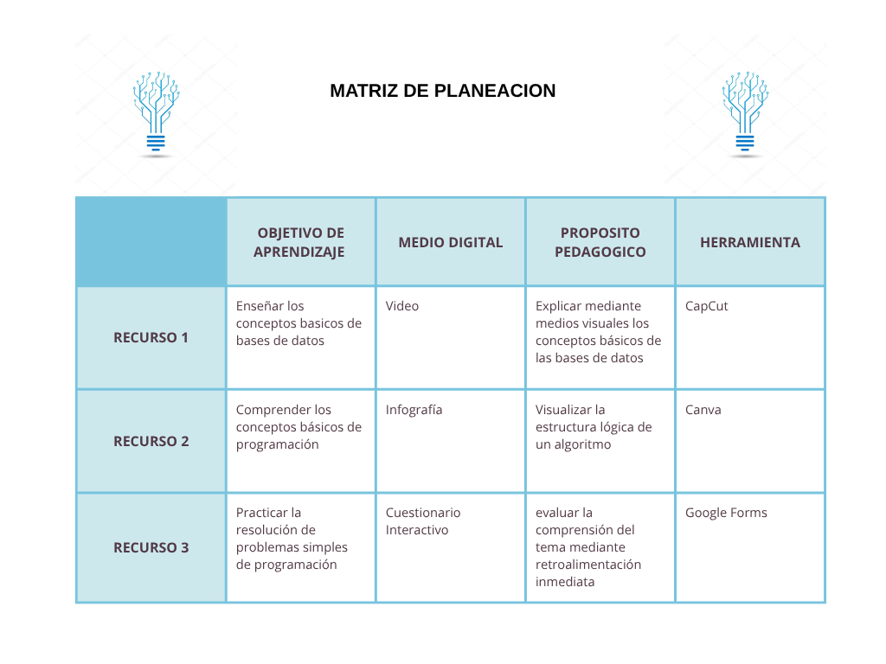
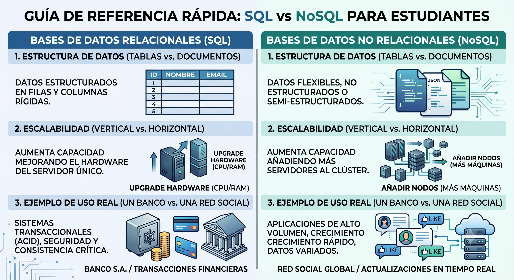
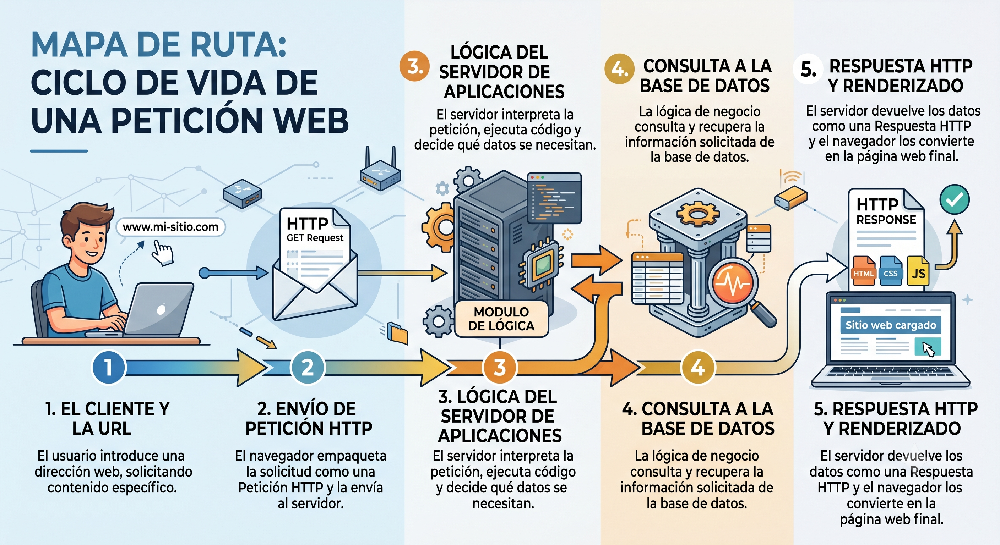

Producto 1
Fundamentos Diseño Digital
Análisis de fundamentos del diseño digital, principios multimedia de Mayer,tendencias del diseño interactivo, licenciamiento y buenas prácticas educativas.
Google Docs
"El conocimiento digital no se acumula, se construye, se comparte y se transforma."
Este portafolio digital integra todas las evidencias de aprendizaje desarrolladas durante el semestre: fundamentos del diseño digital, uso pedagógico de inteligencia artificial, programación educativa con Scratch, desarrollo de aplicaciones móviles con App Inventor y construcción de recursos multimediales.
Propósito pedagógico y competencias del semestre
Este portafolio digital integrado constituye un ecosistema de aprendizaje interactivo diseñado con el propósito de recopilar, estructurar y exponer las evidencias conceptuales y prácticas desarrolladas a lo largo del semestre académico. A través de las diferentes secciones, se documenta un proceso formativo evolutivo que abarca desde la apropiación de los fundamentos teóricos del diseño visual hasta la implementación práctica de lógica de programación en entornos educativos y móviles.
Integrar y presentar de manera organizada, creativa e interactiva las evidencias de aprendizaje desarrolladas durante el semestre, demostrando competencias en diseño de contenidos digitales, uso de herramientas tecnológicas, inteligencia artificial, programación educativa y desarrollo de recursos multimediales.
El propósito pedagógico de este portafolio digital radica en consolidar el modelo de aprendizaje basado en evidencias, permitiendo al estudiante realizar un proceso de metacognición sobre las competencias adquiridas a lo largo del semestre. Al maquetar e integrar activamente cada producto, el desarrollo deja de ser una sucesión de tareas aisladas para convertirse en un proyecto de software unificado. Este enfoque estimula el pensamiento crítico y la autoevaluación, obligando a analizar no solo el resultado técnico de los aplicativos desarrollados en Scratch y MIT App Inventor, sino también la intención didáctica, la usabilidad y la accesibilidad de cada recurso frente a una audiencia real.
Diseño, contenidos y planeación
Análisis de fundamentos del diseño digital, principios multimedia de Mayer,tendencias del diseño interactivo, licenciamiento y buenas prácticas educativas.
Síntesis visual e interactiva sobre tema escogido en clase.

Video introductorio sobre contenidos digitales con narración, subtítulos y diseño visual coherente.
Ejemplo de matriz de planeacion hecha en clase.

Presentación sobre Energias renovables aplicadas a infraestructura T.I creada con IA .
Inteligencia artificial generativa
Prompt 1: Eres un Diseñador instruccional y experto en pedagogía universitaria en ciencias de la computacion.Estudiantes de primer semestre de universidad están teniendo dificultades para comprender el concepto de "Complejidad algoritmica", con el tiempo cronológico exacto de ejecución o el número de líneas de código. Tu tarea es redactar un texto explicativo que desmitifique el concepto, utilizando una analogía cotidiana y explicando su importancia real en la computacion. Usa una estructura de tres secciones (Introducción con analogía, Definición formal simple, Aplicación práctica) con subtítulos claros. No uses formulas matematicas complejas. Máximo 400 palabras. Evita un tono infantil; mantén la rigurosidad pero con simplicidad.
Prompt 2: Eres un Analista de contenido y tutor académico de alto rendimiento.
Se ha asignado un ensayo filosófico extenso de 30 páginas sobre la "Ética en la Inteligencia Artificial" para la próxima clase y los alumnos necesitan un material de repaso previo.
Tu tarea es Generar un resumen analítico del texto que condense las tesis principales, los dilemas morales planteados y las conclusiones del autor.
Usa una tabla comparativa que divida: "Argumento Principal", "Evidencia/Ejemplo" y "Contracorriente filosófica". Al final, añade 3 preguntas de debate.
El resumen completo debe caber en una sola página (máximo 500 palabras). Prohibido usar viñetas genéricas; todo debe ir estructurado dentro de la tabla.
Prompt 3: Eres un Diseñador de información técnica y analista de datos. Los estudiantes se confunden constantemente al elegir entre bases de datos Relacionales (SQL) y No Relacionales (NoSQL) para sus proyectos de desarrollo de software. Tu tarea es hacer una infografía comparativa "frente a frente" que resuma las diferencias clave entre SQL y NoSQL basándose en su estructura, escalabilidad y casos de uso. Guion de diseño de dos columnas paralelas. Cada fila debe contrastar un aspecto: Fila 1: Estructura de datos (Tablas vs. Documentos). Fila 2: Escalabilidad (Vertical vs. Horizontal). Fila 3: Ejemplo de uso real (Un banco vs. una red social). Para cada celda especifica: [Micro-texto corto] y [Icono o metáfora visual sugerida]. Máximo 200 palabras en total. Usa un lenguaje extremadamente directo; cada celda de la tabla comparativa visual no puede superar las 15 palabras.

Prompt 4: Eres un profesor de arquitectura de software y experto en metodologías visuales de aprendizaje. Estudiantes de programación se pierden en la sintaxis y la lógica cuando intentan entender cómo funciona el ciclo de vida de una petición web (Modelo Cliente-Servidor). Crea el mapa de contenido para una infografía secuencial que funcione como una ruta o diagrama de flujo, explicando paso a paso qué pasa desde que el usuario escribe una URL hasta que la página se renderiza. Guion secuencial numerado del 1 al 5. Cada paso debe representar un nodo del camino (1. Cliente/Navegador $\rightarrow$ 2. Petición HTTP $\rightarrow$ 3. Servidor/Lógica $\rightarrow$ 4. Base de datos $\rightarrow$ 5. Respuesta y render). Para cada paso indica: [Título del paso], [Explicación de una línea] y [Acción gráfica/Flecha de conexión]. El flujo debe ser estrictamente lineal. Evita explicaciones profundas de protocolos de red (como el handshake de TCP); concéntrate únicamente en la interacción macro de los componentes. Máximo 250 palabras.

Programación educativa por bloques
Documento con: definición, interfaz, bloques principales, usos educativos y enlace a la plataforma.
Demuestra tu buena ortografia aqui
¡Haz click en la palabra y escribela correctamente para ganar puntos!
Tienes 60 segundos para ganar puntos
¿Listo para ser un astronauta y tener una aventura por el sistema solar?
Usa las flechas del teclado para moverte y evita chocar con los asteroides.
Demuestra tu habilidad matematica con este sencillo juego
responde las preguntas del sapo mago y suma puntos, tienes tres vidas
Conviertete en un verdadero cientifico probando mezclas en este laboratorio
Historia Interactiva
Desarrollo de aplicaciones móviles educativas
Es una plataforma de desarrollo web inicialmente creada por Google y actualmente mantenida por el Instituto de Tecnología de Massachusetts (MIT). Permite a personas de todas las edades y niveles de experiencia crear aplicaciones móviles completamente funcionales para dispositivos Android e iOS utilizando un entorno de programación visual basado en bloques.
La plataforma se divide principalmente en dos entornos complementarios en los que se alterna constantemente:
1. Vista Diseñador (Designer)
Es el espacio dedicado al diseño de la interfaz de
usuario (UI). Funciona de manera visual e intuitiva
mediante el arrastrado y soltado de elementos.
Paleta: Donde se seleccionan los componentes
(botones, imágenes, sensores).
Visor: Una simulación de la pantalla del teléfono
para organizar los elementos en pantalla.
Componentes: Árbol jerárquico que lista los
elementos añadidos al proyecto.
Propiedades: Panel para cambiar color, tamaño,
texto y alineación de los elementos.
2. Vista Bloques (Blocks)
Es el espacio donde se define el comportamiento y
la lógica de la aplicación. En lugar de escribir código
sintáctico, se ensamblan bloques de colores.
Bloques Integrados: Control de flujo
(condicionales, bucles), matemáticas, texto, listas y
variables.
Bloques de Componentes: Eventos específicos
de los elementos añadidos (ej. cuando
Boton1.Click hacer).
Gestión de Eventos: Programación orientada a
eventos, ideal para entender la lógica
computacional pura sin errores de sintaxis.
Ejercicios hechos en APP INVENTOR
Análisis crítico del proceso formativo
La exploración de los fundamentos del diseño digital y la apropiación de los 12 principios multimedia de Richard Mayer transformaron radicalmente mi perspectiva como desarrollador de software. Comprendí que el éxito de un sistema de información no depende únicamente de la robustez de su arquitectura lógica, sino de la eficiencia cognitiva con la que el usuario procesa la interfaz. El Principio de Coherencia y el de Señalización fueron vitales para estructurar la maquetación CSS de este portafolio, permitiendo eliminar ruido visual y jerarquizar contenidos mediante contrastes neón. El mayor desafío radicó en sintetizar la matriz de planeación estructural, logrando conectar de forma óptima la rigurosidad del código nativo con una experiencia de usuario (UX) intuitiva, fluida y adaptativa.
El análisis y la experimentación con herramientas de IA generativa como ChatGPT, Gemini y Claude me permitieron adoptar estas tecnologías no como un método de automatización perezosa o copia textual, sino como un copiloto avanzado de desarrollo. Estructurar los prompts bajo la anatomía obligatoria (rol, contexto, tarea, formato y restricción) demostró la importancia de la ingeniería de instrucciones en la optimización de procesos informáticos. El límite ético y pedagógico fundamental que identifiqué es que la IA propone soluciones sintácticas aceleradas, pero la validación lógica, la personalización didáctica y la responsabilidad del despliegue final en producción dependen enteramente del criterio crítico del tecnólogo, garantizando así la autenticidad del software.
El desarrollo de videojuegos didácticos en Scratch como ORTOGRAFIA GAME y QUIZ MATEMATICAS reforzó de manera práctica mi comprensión sobre las bases del pensamiento computacional. La programación visual por bloques elimina la frustración de la sintaxis estricta y permite enfocar toda la capacidad cognitiva en la arquitectura lógica del algoritmo. Implementar sistemas de control de tiempo inverso mediante variables globales, gestión de hilos interactivos para las vidas del jugador y estructuras condicionales anidadas me dotó de una base sólida para comprender la programación reactiva y orientada a eventos. Esta lógica es perfectamente escalable y trasladable a la creación de flujos interactivos complejos en entornos reales de desarrollo web.
La transición de la lógica de bloques web hacia el entorno móvil en MIT App Inventor representó la consolidación práctica del ciclo de desarrollo de software del semestre. Diseñar el sistema de Inventario de la Tienda Deportiva implicó manipular la Vista Diseñador para estructurar interfaces limpias y adaptativas, para luego dotarlas de comportamiento dinámico en la Vista Bloques. El principal desafío técnico fue comprender la persistencia de datos local y la correcta sincronización de eventos de hardware y lógicos en el emulador. Este proceso demostró el inmenso potencial que tienen los aplicativos móviles personalizados para optimizar la recolección de información y agilizar procesos administrativos en entornos corporativos reales.
Síntesis del proceso formativo y proyección profesional
La culminación de este portafolio digital integrado demuestra que el desarrollo de contenidos digitales y multimediales es una competencia transversal indispensable para el Tecnólogo en Sistemas modernos. A lo largo del semestre se logró unificar de manera exitosa la teoría del diseño interactivo con la práctica algorítmica de bloques y código nativo, transformando actividades académicas aisladas en un producto de software integral, responsivo, estético y desplegado en producción a través de servidores reales.
A lo largo del semestre se consolidó la competencia técnica de maquetar código frontend estructurado semánticamente y la habilidad avanzada de integrar herramientas de Inteligencia Artificial Generativa en la producción de activos digitales. Se perfeccionó el codiseño y la optimización de recursos multimedia mediante una ingeniería de instrucciones estructurada, permitiendo delegar la creación de flujos lógicos, interfaces de usuario adaptativas y contenidos educativos interactivos.
Los conocimientos adquiridos en este curso transforman nuestra proyección profesional Dominar la creacion de prompts y el uso de herramientas de Inteligencia Artificial Generativa para la creación de contenidos textuales, lógicos y multimedia nos dota de una ventaja competitiva clave. Ya no solo estamos capacitados para escribir código, sino para actuar como un director técnico capaz de integrar la IA como un copiloto de desarrollo. Esto me permitirá agilizar los proyectos, optimizar los flujos de trabajo y construir soluciones digitales e interfaces multimedia de nivel empresarial de forma mucho más ágil, eficiente y disruptiva.
Herramientas digitales utilizadas
| HERRAMIENTA | URL | PROPÓSITO | TIPO |
|---|---|---|---|
| Canva | canva.com | Infografías y presentaciones | Freemium |
| Pictory | PictoryAI.com | Contenidos interactivos | Freemium |
| Vimeo | vimeo.com | Alojamiento y distribucion de video | Freemiun |
| ChatGPT (OpenAI) | chat.openai.com | IA generativa · textos y prompts | Freemium |
| Google Gemini | gemini.google.com | IA generativa multimodal | Gratuito |
| Claude (Anthropic) | claude.ai | IA para análisis y código | Freemium |
| Scratch | scratch.mit.edu | Programación visual educativa | Gratuito |
| MIT App Inventor 2 | appinventor.mit.edu | Desarrollo de apps Android | Gratuito |
| GitHub Pages | pages.github.com | Hosting gratuito del portafolio | Gratuito |
| Visual Studio Code | code.visualstudio.com | Editor de código HTML/CSS/JS | Gratuito |
Formato APA 7.ª edición · Mínimo 5 referencias